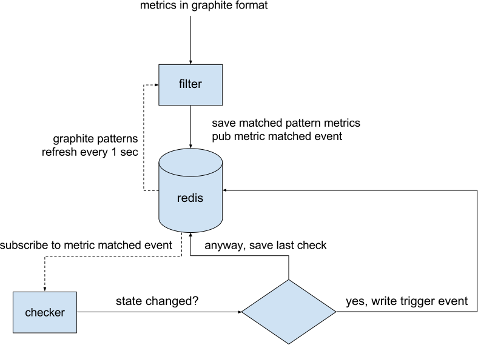
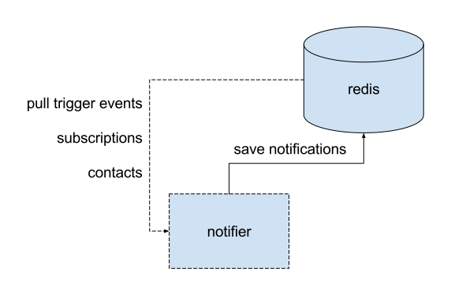

Architecture¶
Terminology¶
Pattern¶
A Graphite pattern is a single dot-separated metric name, possibly containing one or more wildcards.
Examples:
server.web*.load
server.web{1,2,3}.load
server.web1.load
Target¶
A Graphite target is one or more patterns, possibly combined using Graphite functions.
Examples:
averageSeries(server.web*.load)
Metric¶
A metric is a single time-series that is a result of parsing some Graphite target.
Some targets produce a single metric, for example:
server.web1.load
highestCurrent(server.web*.load)
Some targets produce several metrics, for example:
movingAverage(server.web*.load, 10)
State¶
Moira stores separate state for every metric. Each metric can be in only one state at any moment:
Trigger¶
Trigger is a configuration that tells Moira which metrics to watch for. Triggers consist of:
Name. This is just for convenience, user can enter anything here.
Description. Longer text that gets included in notification to delivery channels that support long texts.
One or more targets.
WARN and ERROR value limits, or a Python expression to calculate state.
One or more tags.
TTL value. When new data doesn’t arrive for TTL seconds, the metric will switch to the State set by the user.
Check schedule. For example, a trigger can be set to check only during business hours.
Last Check¶
When Moira checks a trigger, it stores the following information on each metric:
Current value.
Current timestamp.
Current state.
Trigger Event¶
When Moira checks a trigger, if any of the metric states change, Moira generates an event. Events consist of:
Trigger ID.
Metric name (as given by parsed target).
New state.
Previous state.
Current timestamp.
Tags¶
Tags are simple string markers for grouping of triggers and configuring subscriptions.
Subscription¶
Moira generates notifications for an event only if trigger tags match any of the user-created subscriptions. Each subscription consists of:
One or more tags.
Contact information.
Quiet time schedule.
Dataflow¶
Filter and Check Incoming Metrics¶
{kind=link}
When user adds a new trigger, Moira parses patterns from targets and saves them
to moira-pattern-list key in Redis. Filter rereads this list every second.
When a metric value arrives, Filter checks metric name against the list
of patterns. Matching metrics are saved to moira-metric:<metricname> keys
in Redis. Redis pub/sub mechanism is used to inform Checker of incoming metric
value that should be checked as soon as possible.
Checker metrics handler reads triggers by pattern from
moira-pattern-triggers:<pattern> and add trigger_id to Redis set
moira-triggers-to-check. NODATA Checker adds all triggers to Redis set
moira-triggers-to-check once per nodata_check_interval setting.
Remote Triggers Checker gets all remote trigger ID and adds it to
Redis set moira-remote-triggers-to-check once per remote\check_interval
setting.
Checker pops trigger_id from moira-triggers-to-check and starts
checking procedure. Remote Triggers Checker does the same, but pops
trigger_id from moira-remote-triggers-to-check and starts remote check,
which involve remote Graphite HTTP API.
Trigger target can contain one or multiple metrics, so results are written
per metric. moira-metric-last-check:<trigger_id> Redis key contains last
check JSON with metric states.
When a metric changes its state, a new event is written to
moira-trigger-events Redis key. This happens only if value timestamp
falls inside time period allowed by trigger schedule.
If a metric has been in NODATA or ERROR state for a long period, every 24 hours Moira will issue an additional reminder event.
Trigger switches to EXCEPTION state, if any exception occurs during trigger checking.
Process Trigger Events¶
{kind=link}
Notifier constantly pulls new events from moira-trigger-events
Redis key and schedules notifications according to subscription schedule
and throttling rules. If a trigger contains all of the tags in
a subscription, and only in this case, a notification is created for
this subscription.
Subscription schedule delays notifications of occurred event to the beginning of next allowed time interval. Note that this differs from trigger schedule, which suppresses event generation entirely.
Throttling rules will delay notifications:
If there are more than 10 events per hour, a notification will be sent at most once per 30 minutes.
If there are more than 20 events per 3 hours, a notification will be sent at most once per hour.
Scheduled notifications are written to moira-notifier-notifications
Redis key.
{kind=link}